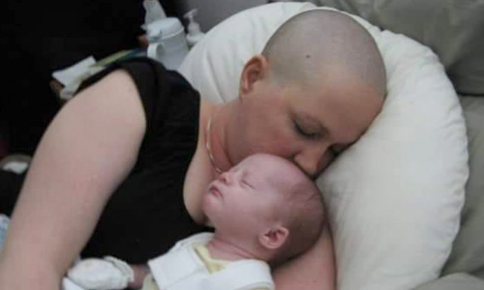

Pew: HALF of Americans want more religion in society!
'Perversion Files': Thousands of Boy Scout Leaders Face Child Sex Allegations...
More than 12,000 victims, expert says
SUPREME COURT TAKES 3 RELIGIOUS LIBERTY VERSUS LGBTETC RIGHTS CASES...
BLACK ROBES TO DECIDE DEFINITION OF 'SEX'...
Bethany Christian Services will allow gay couples to adopt, reversing policy after legal settlement
Philadelphia can ban Christian foster agencies who don't work with gay couples, Appeals Court rules
'Paid in full': Wichita church pays off $2.2 million in medical debt for Kansans
Portland church building 15 tiny homes on campus to shelter homeless
BIDEN SET TO ANNOUNCE PRESIDENTIAL RUN THURSDAY MORNING
Twitter CEO Jack Dorsey meets with Trump in Oval Office...
Facebook’s New Chief Lawyer Helped Write the Patriot Act 👀
Microsoft is winning the techlash...
UPDATE: Rachel Held Evans still in medically induced coma
DC pastor challenges Lamborghini John Gray to live more minimally...
House Judiciary Committee issues subpoena to former White House counsel Don McGahn
On staff not following orders, Trump says: 'Nobody disobeys me'
2019's SUPREME COURT CASES TO WATCH...
Critics blast Ilhan Omar over old ‘Black Hawk Down’ tweet...
Bernie: Israel Govt ‘Racist,’ Treats Palestinians 'Extremely Unfairly'
Medicare to be insolvent by 2026, Social Security by 2035: Report
HALF OF U.S. PARENTS HAVE CUT RETIREMENT SAVINGS TO PAY THEIR ADULT CHILDREN'S BILLS
Jussie Smollett's Lawyers Sued By Osundario Brothers For Defamation
Joy Reid blog 'hack' remains a mystery 1 year later 🤔
Man lands job after officer gives him ride to interview instead of ticket

KUSHNER: TRUMP ISRAELI-PALESTINIAN PEACE PLAN TO BE PRESENTED AFTER RAMADAN
'TOUGH COMPROMISES' FOR BOTH SIDES
S&P 500, Nasdaq close at record highs after strong earnings from broad range of companies
Sri Lanka investigates possible ISIS involvement in Easter Sunday bombings...
Scale, sophistication of attack point to foreign links: U.S. ambassador
Official: Most of the bombers were highly educated...
'They are quite stable financially, they hold degrees'

Prager: Why Obama and Clinton Tweeted About 'Easter Worshippers,' Not Christians...
AOC silent on Sri Lanka -- after tweeting about Christchurch 14 times...

Uber driver refuses to take woman to abortion clinic
Pro-life activist David Daleiden's preliminary hearings delayed indefinitely
KAMALA CALLS FOR THIRD GENDER OPTION ON FEDERAL IDs
Vows executive action on guns if elected...
Buttigieg Pretends To Be Moderate, But He's Not...
Trump sues to block Dems' subpoena for financial information
Chalking tires to enforce parking rules is unconstitutional, court finds
Teen’s $1B suit claims Apple’s facial recognition software led to false arrest...
First major drug distribution company, former CEO, criminally charged in opioid crisis...
Klobuchar Has a 'Please Clap' Moment...
Gender is 'how a person feels,' Texas school system tells students
That mental health app might share your data without telling you...
Rare Babe Ruth Yankees Jersey Expected to Fetch over $4.5M at Auction
© 2019 Christian Daily Reporter | Editor: Adam Ford
CDR Comics | CDR Talks | CDRticles | Manifesto
100% reader-funded: Support CDR!